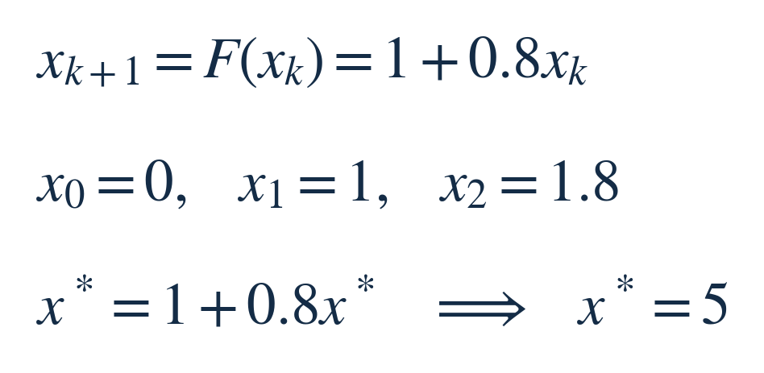
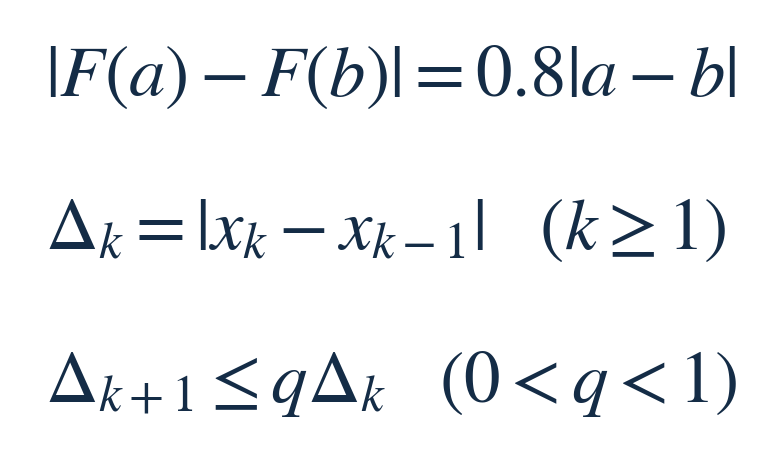
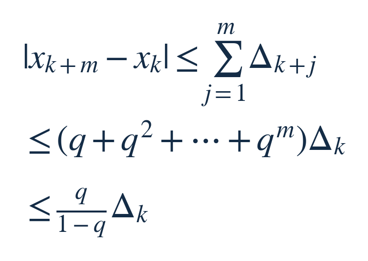
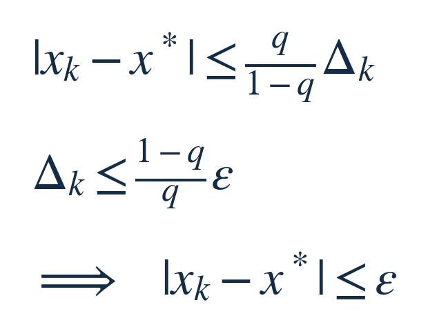
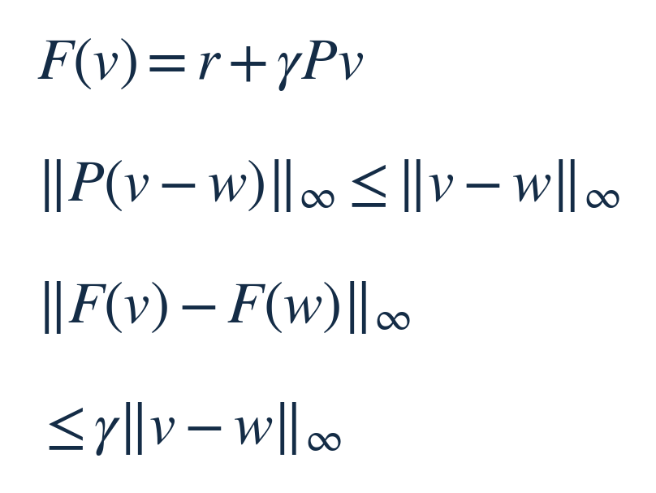
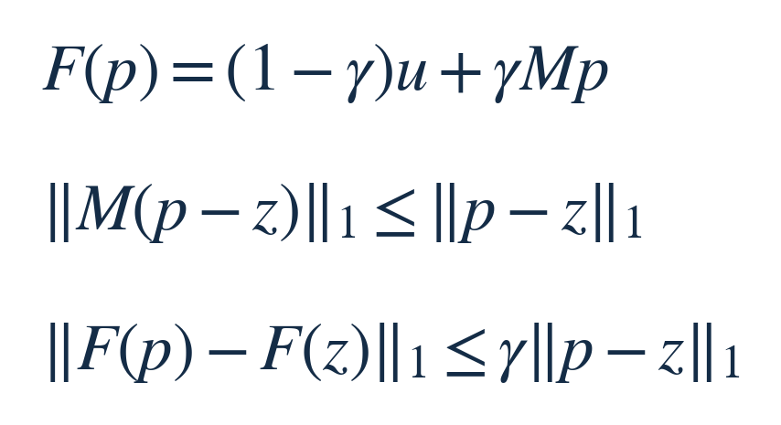

先算一个会反复出现的回报
每轮得到 1 单位回报，下一轮的回报按本轮的 0.8 倍计入，再下一轮按 0.8 的平方计入。这里的 0.8 是教学例子中预先选定的折扣，不是实验结果，也不是唯一合理的取值。我们要算从现在开始的总折扣回报；每轮回报和折扣都固定，可调整的只有算到第几步。
先把未来估为 0。每次更新都计入眼前的 1，再加上上一版未来估计的 0.8 倍。用 xₖ 表示第 k 次更新后的估计，F 表示这条固定更新规则；x* 表示更新后不再改变的答案，称为固定点。


这个单变量问题可以直接解出 5。我们仍把它逐步计算，是为了看清：如果面对很多状态，不能预先拿到答案，怎样判断当前估计已经足够准确？
本期新增的是计算过程中的停止保证。前几期研究怎样选预测值或修正方案；这次研究反复执行同一条更新规则，如何从已算出的两步推断还差多少。无需先读往期。
把“下一步会缩短多少”写清楚
把任意两个输入 a、b 送入同一条规则，公共的 1 会相消，输出之差恰好变成原来的 0.8 倍。只要一条规则能把任意两点的距离压到原来的 q 倍以内，而且 0＜q＜1，就称它具有收缩性；q 是已经证明的上界，不是看几轮曲线拟合出来的比例。
现在用相邻两次估计充当这两个输入。Δₖ 表示从 xₖ₋₁ 到 xₖ 的距离，也就是刚刚走完的一步。


于是，从 xₖ 出发，下一步最多走 qΔₖ，再下一步最多走 q²Δₖ。例子里每一步都恰好按 0.8 缩短：前五步分别是 1、0.8、0.64、0.512、0.4096。我们要利用的是这一整串未来步长，而不只看眼前的一步。
把所有还没走的步长加起来
从 xₖ 走到未来第 m 步的 xₖ₊ₘ，直线距离不会超过沿途每一段距离的总和。把刚才的收缩关系逐段代入，得到下面三行。m 是再走的步数，q、Δₖ 与上一节完全相同。


最后一行用到了等比级数：q＋q²＋⋯ 的和是 q/(1−q)。这里从 q 开始，因为 Δₖ 是已经走完的一步，剩余路程从下一步算起。
为什么这也保证真的存在终点？Δₖ 本身至多为 q 的 k−1 次方乘第一步，因此从足够晚的一步出发，所有后续位置都能被圈在任意小的范围内。实数或有限维实向量不会丢掉这样的极限。收缩规则又是连续的，把迭代式两边取极限，就得到 F(x*)＝x*。
答案也只能有一个：若两个不同答案都不再移动，更新前后它们的距离相同；收缩却要求这个距离至多剩 q 倍。因为 q＜1，只有距离为 0 才能同时满足。这里先在整个实数空间讨论；若只允许某个区域，还须保证区域闭合且更新不会走出去。
由允许误差，反推停止阈值
让刚才的 m 趋于无穷，就得到当前估计到固定点的距离上界。设 ε 是允许的绝对误差，与 x 使用相同单位。只要刚走完的步长达到第二行的阈值，就能停止并输出 xₖ。


回到例子：q＝0.8，所以剩余误差至多为当前步长的 4 倍。若要求误差不超过 0.01 单位，就等到相邻两步之差不超过 0.0025。第 5 步的估计是 3.3616，刚走了 0.4096；上界为 1.6384，恰好等于它到 5 的距离。一般问题里上界未必取等号。
这给出一套可执行规则：先证明收缩率，再设允许误差，最后检查按该距离定义计算的步长。q 越接近 1，未来可能累计的路程越多，停止阈值就需要更严格。
同一机制，怎样落到两个应用里
前面的推导只用了距离的三角不等式和收缩性；把绝对值换成下面指定的向量范数，结论仍然成立。范数在这里就是计算一整组数之间距离的规则。
一、固定策略的价值评价。策略已经选定，不在这一轮求最优动作。v 的每个分量是一个状态的长期折扣回报估计；r 是各状态的即时平均回报；Pᵢⱼ 是从状态 i 转到 j 的概率，每行非负且加起来为 1。γ 是固定折扣，0＜γ＜1。更新时先平均下一状态的估计，再乘折扣、加即时回报。
这里用所有状态中最大的绝对差作为距离，写成 ‖·‖∞。若两套估计在每个状态都相差不超过 d，那么按概率做平均后也不会相差超过 d；再乘 γ，最多剩 γd。因此可以取 q＝γ，直接使用前面的停止界。


这一结论针对已知模型、固定策略、精确同步更新。换成抽样回报、神经网络拟合或不断变化的策略后，需要重新分析，不能把此处的误差保证直接搬过去。
PageRank：换了对象，也要换对距离
二、PageRank。现在 p 的每个分量表示访问某页的概率，不是回报。取 0＜γ＜1，以概率 γ 沿链接走，以概率 1−γ 按固定分布 u 重新选择页面。Mᵢⱼ 表示从页面 j 转到 i 的概率，非负且每列加起来为 1；没有外链的页面须先按约定补成合法转移。
此处采用各页面概率绝对差的总和，写成 ‖·‖₁；z 表示另一套概率估计。M 只是把每一份差异分配出去，取绝对值后求和不会增大；共同的重启项相消，再乘 γ，所以同样有 q＝γ 的保证。


两者共享的是“在指定距离下，每次更新压缩差异”，而非所有矩阵都能用同一种距离。价值评价用最大坐标差，PageRank 这里用绝对差之和；不能只因为式子相像，就沿用前一个误差尺度。收敛到 PageRank 的答案，也不等于证明它最符合某项搜索业务目标。
保留三个边界
收缩率必须覆盖实际经过的区域，且度量、更新规则前后一致。观察到几次步长变小，不能替代这个证明。
以上按精确更新推导。如果每一步还有数值近似或抽样误差，就要把它们累计的影响纳入界；单看相邻输出差可能过早停止。
q＝1 时本证明不适用，不代表所有这类迭代都不收敛。q＝0 则是常值映射，更新一次就到固定点，无需使用带除以 q 的停止阈值。
留一个小判断
已证明某迭代的收缩率 q＝0.9。当前相邻两步之差为 0.001，希望输出误差不超过 0.005。仅凭这些信息，能否保证现在停止？先想一想，再看末尾。
可选深入阅读
以下三份材料分别对应固定点误差界、价值评价与 PageRank；正文中的回报数值和逐步讲解是教学构造，不是论文实验。
University of Maryland：Fixed Point Iteration and Contraction Mapping Theorem，第 1–3 页
Stanford CME241：Bellman Operators，第 5–7 页
Stanford CS224W：PageRank，随机重启与矩阵更新
想过再看｜答案
不能保证。q/(1−q)＝9，因此当前可证明的误差上界是 9×0.001＝0.009，大于允许的 0.005。这并不说明实际误差一定超标，只说明现有界还不能证明它达标。按这条规则，步长需不超过 0.005/9；若取六位小数作为执行阈值，可保守设为 0.000555。